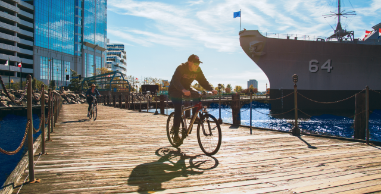
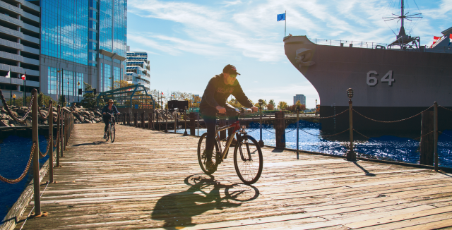
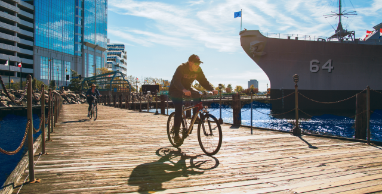
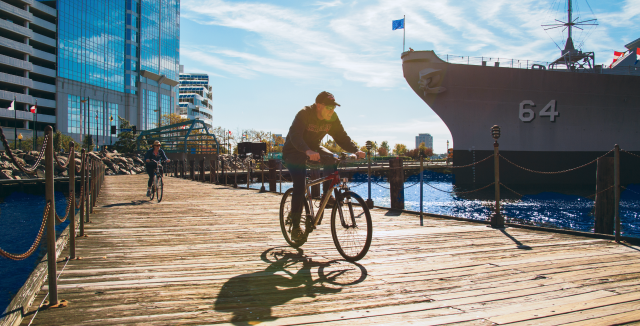

Photographs by Jeffrey Ocampo
The Elizabeth River Trail stretches 10.5 miles along Norfolk’s iconic waterfront. It connects anchor institutions, major employers, & economic generators. It also connects 28 neighborhoods within a 5-minute walk, creating ties between Norfolk’s unique communities.
I worked with the Friends of the Elizabeth River Trail to re-brand the trail and develop a new wayfinding system – generating public support to create a world-class asset & a source of local pride.
Contributions
Tools
Partners
At the mouth of the Chesapeake Bay, Norfolk is defined by its bodies of water. Within its borders, Norfolk is the core metropolitan area of the greater Hampton Roads community – it is the region’s historic urban, financial, and cultural center. The Elizabeth River Trail introduces a new way for people to explore the best Norfolk has to offer.
I established a flexible, modular brand system that represent the various terrains along the trail and encourages multiple forms of trail activity.
I designed the brand system to reflect the experience of exploring the Elizabeth River Trail – and in turn, exploring Norfolk. Like Norfolk, the system is industrial in its geometry & modularity, and organic in its flexibility & applicability.
Land
Water

Trail


Following the launch of the rebrand, I worked closely with the Friends of the Elizabeth Trail to apply the branding to new wayfinding materials, educational, and sponsorship collateral.
Instructional Signage
Post Blade Signage
Direction & Mile Markers
Sectional Signage
Sponsor System
Cover Slide

Mission Slide
Photo Grid Slide
Bulleted Slide

Case Study Slide

End Slide

The Friends of the Elizabeth Trail has conducted over 75 community outreach presentations and events. Their efforts have raised over $1.6 million in private and corporate sponsorship, and garnered over $4 million in trail investments from the city of Norfolk and the Virginia Department of Transportation.
Through 2023, the organization will enact their Capital Project Plan, which includes the installation of new signage and trailheads; the implementation of kayak-sharing programs and art installations; and the introduction of ‘smart trail’ amenities.
üö¥‚Äç üí®
If you’d like to learn more about this project, I’d love to hear from you. I’d be happy to share how the branding has taken shape, and how we can work together to shape your brand.
You can reach me by email at janice.jamye.pang@gmail.com üíå